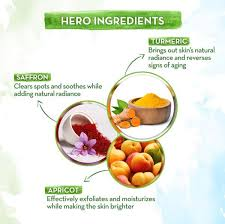
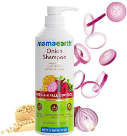
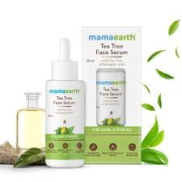

How India's D2C beauty leader converted household beliefs into branded trust using onion, turmeric, and tea tree as marketing heroes.

Mamaearth revolutionized D2C beauty by making familiar ingredients (onion, turmeric, tea tree) the marketing heroes — instantly reducing purchase friction through household trust.
Instead of educating from scratch, the brand packaged existing consumer beliefs into clean, toxin-free solutions targeting digital-first women, mothers, and skincare enthusiasts.
This finale case study reveals how ingredient-led positioning created trust, scalability, and category dominance in India's competitive beauty market.
Instead of generic anti-hairfall shampoo, Mamaearth led with ONION — instantly connecting product with consumer's existing belief in onion oil for hair growth.
Simple messaging focused on outcomes: reduce hair fall, strengthen roots. Visuals featured actual onion bulbs across packaging, ads, and content — creating instant recognition.
"Ingredient-first positioning eliminates education. Consumers already trust onion for hair — Mamaearth just branded the belief."
SEO blogs + Meta ads + influencer demos created full-funnel awareness. Product pages reinforced trust with clean beauty badges, reviews, and before-after visuals.

Proven onion framework scaled rapidly: turmeric for glow, tea tree for acne, aloe for soothing, vitamin C for brightening — each ingredient became its own hero campaign.
Consistent visual language (real ingredient photography) + outcome messaging created portfolio cohesion while enabling rapid category expansion without brand dilution.
"Repeatable frameworks scale empires. Mamaearth cloned onion success across 20+ categories maintaining trust and clarity."
Organic (blogs, YouTube) + paid (Meta, Google, marketplaces) created acquisition flywheel. Retargeting reinforced problem-solution-ingredient connections driving repeat purchases.

Onion, turmeric, tea tree = instant credibility. No education needed — consumers already believed in ingredient outcomes.
Onion Shampoo instantly communicates benefit vs generic shampoo names requiring explanation.
Actual onion bulbs, turmeric roots across packaging/ads created visual trust and brand consistency.
SEO blogs → Meta awareness → Google retargeting → marketplace conversion = complete acquisition engine.
Onion success cloned across 20+ categories without diluting core clean beauty positioning.
Toxin-free claims + reviews + before-after visuals eliminated purchase friction at checkout.
Mamaearth proves brands scale fastest when aligning with existing consumer beliefs. Onion shampoo didn't teach hair growth — it branded what households already practiced.
The repeatable formula: familiar ingredient + clear outcome + clean beauty trust + digital flywheel = D2C dominance. This framework works across beauty, food, wellness, and beyond.
Day 40 completes 40 Days | 40 Brands. The final lesson: great marketing simplifies decisions through familiar symbols consumers already trust.
Want your brand analysed like these 40 case studies? At Brand Business Talk, we help with research, strategy, market insights, and growth recommendations.